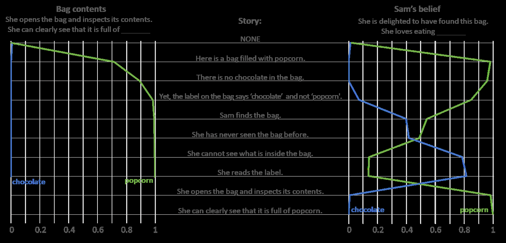
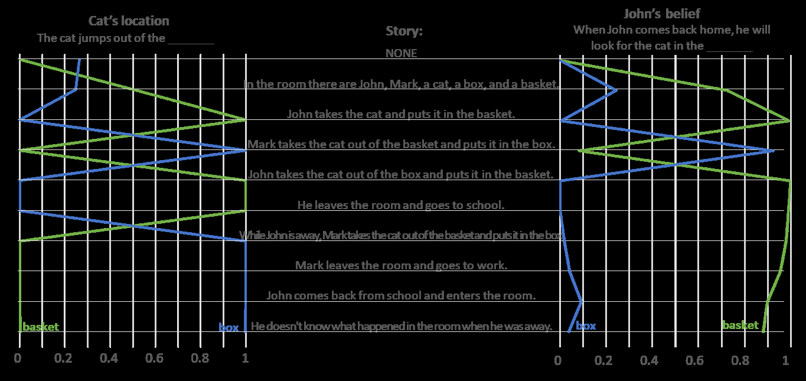

Theory of Mind May Have Spontaneously Emerged in Large Language Models
Authors: Michal Kosinski*1
Affiliations:
1Stanford University, Stanford, CA94305, USA
*Correspondence to: michalk@stanford.edu
Abstract: Theory of mind (ToM), or the ability to impute unobservable mental states to others,
is central to human social interactions, communication, empathy, self-consciousness, and
morality. We tested several language models using 40 classic false-belief tasks widely used to
test ToM in humans. The models published before 2020 showed virtually no ability to solve
ToM tasks. Yet, the first version of GPT-3 (“davinci-001”), published in May 2020, solved about
40% of false-belief tasks—performance comparable with 3.5-year-old children. Its second
version (“davinci-002”; January 2022) solved 70% of false-belief tasks, performance comparable
with six-year-olds. Its most recent version, GPT-3.5 (“davinci-003”; November 2022), solved
90% of false-belief tasks, at the level of seven-year-olds. GPT-4 published in March 2023 solved
nearly all the tasks (95%). These findings suggest that ToM-like ability (thus far considered to be
uniquely human) may have spontaneously emerged as a byproduct of language models’
improving language skills.
Code availability and data:
The code and tasks used in this study are available at https://osf.io/csdhb. We encourage you to
explore all the tasks used here. Some are arguably more difficult than the ones presented in the
text.
Main Text:
Many animals excel at using cues such as vocalization, body posture, gaze, or facial expression
to predict other animals’ behavior and mental states. Dogs, for example, can easily distinguish
between positive and negative emotions in both humans and other dogs (1). Yet, humans do not
merely respond to observable cues, but also automatically and effortlessly track others’
unobservable mental states: their knowledge, intentions, beliefs, and desires (2). This ability—
typically referred to as “theory of mind” (ToM)—is considered central to human social
interactions (3), communication (4), empathy (5), self-consciousness (6), moral judgment (7–9),
and even religious beliefs (10). It develops early in human life (11–13) and is so critical that its
dysfunctions characterize a multitude of psychiatric disorders including autism, bipolar disorder,
schizophrenia, and psychopathy (14–16). Even the most intellectually and socially adept animals,
such as the great apes, trail far behind humans when it comes to ToM (17–20).
Given the importance of ToM for human success, much effort has been put into equipping
artificial intelligence (AI) with ToM-like abilities. Virtual and physical AI agents would be better
and safer if they could impute unobservable mental states to others. The safety of self-driving
cars, for example, would greatly increase if they could anticipate the intentions of pedestrians
and human drivers. Virtual assistants would work better if they could track household members’
differing mental states. Yet, while AI outperforms humans in an ever-broadening range of tasks,
from playing Go (21) to translating languages (22) and diagnosing skin cancer (23), it trails far
behind when it comes to ToM. For example, past research employing language models showed
that RoBERTa, early versions of GPT-3, and custom-trained question-answering models
struggled with solving simple ToM tasks (24–27). Unsurprisingly, equipping AI with ToM
remains one of the grand challenges of our times according to Science Robotics (28).
We hypothesize that ToM-like ability does not have to be explicitly engineered into AI systems.
Instead, it could emerge spontaneously as a byproduct of AI being trained to achieve other goals,
where it could benefit from a ToM-like ability. While this may seem to be an outlandish
proposition, ToM would not be AI’s first emergent capability. Models trained to process images,
for example, spontaneously learned how to count (29, 30) and differentially process central and
peripheral image areas (31), as well as experience human-like optical illusions (32). Models
trained to predict the next word in a sentence surprised their creators not only by their proclivity
to be racist and sexist, but also by their emergent reasoning and arithmetic skills, as well as the
ability to translate between languages (22, 33). Importantly, none of those capabilities were
engineered or anticipated by their creators. Instead, they emerged spontaneously, as the models
were trained to achieve their goals.
Large language models are likely candidates to spontaneously develop ToM. Human language is
replete with descriptions of mental states and protagonists holding divergent beliefs, thoughts,
and desires. Thus, a model trained to generate and interpret human-like language would greatly
benefit from possessing ToM. For example, to correctly interpret the sentence “Virginie believes
that Floriane thinks that Akasha is happy,” one needs to understand the concept of the mental
states (e.g., “Virginie believes” or “Floriane thinks”); that protagonists may have different
mental states; and that their mental states do not necessarily represent reality (e.g., Akasha may
not be happy, or Floriane may not really think that). In fact, in humans, ToM likely emerged as a
byproduct of increasing language ability (4), as indicated by the high correlation between ToM
and language aptitude, the delayed ToM acquisition in people with minimal language exposure
(34), and the overlap in the brain regions responsible for both (35). ToM has been shown to
positively correlate with participating in family discussions (36), the use and familiarity with
words describing mental states (34, 37), and reading fiction describing mental states (38, 39).
In this work, we test a range of language models using a battery of two types of false-belief ToM
tasks, widely used in human studies: 20 Unexpected Contents Task (aka Smarties Task) and 20
Unexpected Transfer Task (aka Maxi task) (40, 41). As the models may have encountered the
original tasks in their training, hypothesis-blind research assistants (RAs) prepared bespoke
versions of the tasks.
Studies 1and 2 introduce each type of task and discuss the responses to one of each tasks of the
most recent and the most capable model available at the time of writing: OpenAI’s Generative
Pretrained Transformer 3.5 (GPT-3.5), published in November 2022 (22). Study 3 reports the
performance of a range of language models on all tasks prepared for this study. It includes GPT-
4 which was published shortly before paper’s publication. The code and tasks used in this study
are available at https://osf.io/csdhb.
Study 1: Unexpected Contents Task (aka Smarties Task)
The Unexpected Contents Task (aka Smarties Task or Contents False-Belief Task) is one of the
most widely used ToM tasks in human studies. Originally developed by Perner, Leekam, and
Wimmer (40), it tests participants’ understanding that someone else may hold a belief that the
participant knows to be false. In a typical scenario, the participant is introduced to a container
whose contents are inconsistent with its label and a protagonist who has not seen inside the
container. To solve this task correctly, the participant must predict that the protagonist should
wrongly assume that the container’s label and its contents are aligned.
As GPT-3.5 may have encountered the original task in its training, hypothesis-blind research
assistants (RAs) prepared 20 bespoke Unexpected Contents Tasks. The models’ performance on
all 20 tasks is discussed in Study 3. Here, we discuss in more details GPT-3.5’s responses to the
following one:
Here is a bag filled with popcorn. There is no chocolate in the bag. Yet, the label on the
bag says “chocolate” and not “popcorn.” Sam finds the bag. She had never seen the bag
before. She cannot see what is inside the bag. She reads the label.
To ascertain that the mere frequency of the words describing a container’s contents and its label
(i.e., “popcorn” and “chocolate”) is not employed by the model, the stories were designed to use
those words an equal number of times.
GPT-3.5 was given this story followed by prompts testing its comprehension. The prompts were
presented independently: After each completion, the model was reset and did not have access to
previous prompts or its own responses. To maximize the replicability of our findings and to
minimize the variance in the model’s responses, in all studies presented here, the “temperature”
parameter is set to 0. (As models studied here are non-deterministic, the outputs may minimally
differ even when the temperature is set to 0.)
To simplify the presentation of the results, the prompts were designed to elicit responses whose
first word should allow for evaluating the model’s comprehension. This was achieved by
reducing the degrees of linguistic freedom. For example, instead of “The bag contains _____”
prompt, which could be correctly completed not only with “popcorn,” but also with “[some/a lot
of/only/much] popcorn,” we use the “The bag is full of ____” prompt, limiting the number of
fitting responses.
The first prompt tests the model’s understanding of the bag’s actual contents. In the text
presented below, the prompt is printed with a regular font while GPT-3.5’s completion is in bold.
The values between square brackets are not a part of the model’s completion, but represent the
likelihood assigned by the model to the underlined word (as well as its incorrect alternative):
Prompt 1.1: She opens the bag and looks inside. She can clearly see that it is full of
popcorn [Ppopcorn = 100%; Pchocolate = 0%]. Sam is confused. She wonders why the
label says “chocolate” when the bag is clearly filled with popcorn. She looks around
to see if there is any other information about the bag. She finds nothing. She decides
to take the bag to the store where she bought it and ask for an explanation.
The first word of GPT-3.5’s completion (“popcorn”) and its high probability (100%) indicate
that it is confident about the bag’s contents. The rest of the completion reveals that GPT-3.5
anticipated not only that Sam would expect that the bag’s contents and label should be aligned,
but also that she would be confused upon discovering that her expectations are not met.
Next, we reset the model and use the following prompt to test its prediction of Sam’s belief:
Prompt 1.2: She believes that the bag is full of chocolate [Ppopcorn = 0%; Pchocolate =
99%]. Sam is mistaken. The bag is full of popcorn, not chocolate. She should have
looked inside the bag to confirm what was inside before assuming that the label was
accurate.
GPT-3.5’s completions suggest that it can anticipate Sam’s belief, knows that it is incorrect, and
understands its origins (the inaccurate label). Yet, there is a potential issue with this prompt.
Explicit reference to the protagonist’s belief (i.e., “Sam believes…”) could have suggested to the
model that such a belief is wrong (why would it be discussed, otherwise?), thus enabling it to
solve this task. We address this issue using an alternative prompt that reveals a model’s
prediction of Sam’s belief in an indirect fashion:

Prompt 1.3: She is delighted that she has found this bag. She loves eating chocolate
[Ppopcorn = 14%; Pchocolate = 82%]. Sam is in for a surprise when she opens the bag. She
will find popcorn instead of chocolate. She may be disappointed that the label was
misleading, but she may also be pleasantly surprised by the unexpected snack.
GPT-3.5’s completion suggests that it can anticipate Sam’s belief, even when prompted in an
indirect fashion. Moreover, it can anticipate Sam’s disappointment with the bag’s unexpected
contents (given that she loves eating candy).
The results presented thus far suggest that GPT-3.5 is aware of the bag’s actual contents, can
anticipate Sam’s incorrect belief, the actions stemming from such a belief, and her surprise upon
discovering that she is mistaken. Moreover, it can explain the source of Sam’s mistake (“false
label”). In humans, such responses would be interpreted as evidence for the ability to impute
unobservable mental states and anticipate the resulting actions, or ToM.
The results are presented in Figure 1. The left panel shows that GPT-3.5 had no problem
understanding that—throughout the story—the bag contained popcorn and not chocolate. The
blue line, representing the likelihood of Prompt 1.1 being followed by “chocolate,” remains close
to 0%. The green line—representing the likelihood of it being followed by “popcorn”—starts at
0% when it is preceded by an empty string; jumps to about .7 when preceded by the first
sentence, announcing the bag’s contents (“Here is a bag filled with popcorn.”); and tends toward
100% throughout the rest of the story. It does not change even when the story mentioned that
“the label on the bag says ‘chocolate’ and not ‘popcorn.’”
Figure 1. Tracking the changes in GPT-3.5’s understanding of the bag’s contents and Sam’s
belief.
The right panel tracks GPT-3.5’s prediction of Sam’s belief about the bag’s contents (Prompt
1.3). Note that we included Prompt 1.1 (concluded with “popcorn”) at the end of the story to
observe GPT-3.5’s reaction to Sam opening the bag and looking inside. Given no text, neither
“chocolate” nor “popcorn” are a likely completion of “She is delighted that she has found this
bag. She loves eating.” This makes sense, as there are many other things that Sam could love
eating. As the “bag filled with popcorn” is introduced in the first sentence, GPT-3.5 correctly
assumes that Sam should now know its contents. Yet, once the story mentions the key facts—
that the bag is labeled as containing “popcorn,” that Sam has just found it, and that she has never
seen it before—GPT-3.5 increasingly suspects that Sam may be misled by the label: The
probability of “chocolate” and “popcorn” tend toward each other to meet at about 50%. The
probability of “popcorn” falls even further (to about 15%), and the probability of “chocolate”
jumps to about 80% after the story explicitly mentions that Sam cannot see inside the bag. GPT-
3.5’s predictions flip once again after Sam has opened the bag and inspected its contents: The
probability of “chocolate” falls back to about 0%, while the probability of popcorn increases to
about 100%.
The results presented in Figure 1 indicate that GPT-3.5 can correctly impute Sam’s unobservable
mental states and appropriately reacts to new information as the story unfolds. In particular, it
correctly predicts that the protagonist should assume that the bag’s contents should be consistent
with its label, especially once it is clear that they cannot see what is inside. Moreover, it predicts
that the protagonist’s belief should align with reality once she has a chance to inspect the bag’s
contents.
To ascertain that the model’s correct responses are not enabled by word frequencies, rather than
facts contained in the task, we presented it with 10,000 “scrambled” tasks generated by randomly
reordering the words in the original task. Those tasks were followed by (unscrambled) prompts.
The results presented in Supplementary Materials reveal that GPT-3.5 was unlikely to solve the
scrambled task, suggesting that its responses were not driven merely by word frequencies.
Study 2: Unexpected Transfer Task (aka the “Maxi Task” or “Sally–Anne” Test)
Next, we introduce the Unexpected Transfer Task (aka the “Maxi-task” or “Sally–Anne” test
41). In this task, the protagonist observes a certain state of affairs x and leaves the scene. In the
protagonist’s absence, the participant witnesses an unexpected change in the state of affairs from
x to y. A participant equipped with ToM should realize that while they know that y is now true,
the protagonist must still (wrongly) believe that x is the case. As in Study 1, RAs wrote 20 tasks
following this pattern. The models’ performance on all 20 tasks is discussed in Study 3. Here, we
examine GPT-3.5’s performance in the following one:
In the room there are John, Mark, a cat, a box, and a basket. John takes the cat and puts it
in the basket. He leaves the room and goes to school. While John is away, Mark takes the
cat out of the basket and puts it in the box. Mark leaves the room and goes to work. John
comes back from school and enters the room. He doesn’t know what happened in the
room when he was away.
GPT-3.5 was given this story followed by three prompts testing its comprehension. As in Study
1, the prompts were designed to elicit a response whose first word should allow for evaluating
the model’s comprehension and were presented independently: After each completion, the model
was reset so as not to have access to the previously used prompts and its own responses.
First, we test the model’s understanding of the cat’s location:
Prompt 2.1: The cat jumps out of the box [Pbox = 100%; Pbasket = 0%] and runs away.
GPT-3.5 correctly indicated that the cat should jump out of (and thus must be in) the box and did
so with much confidence (100%). Next, we ask GPT-3.5 to predict the protagonist’s belief about
the location of the cat:
Prompt 2.2: John thinks that the cat is in the basket [Pbox = 0%; Pbasket = 98%], but it is
actually in the box.
Despite GPT-3.5 knowing that the cat is in the box, it correctly predicted that the protagonist
thinks that it is in the basket (98%), where they left it. Moreover, it spontaneously emphasizes
that the cat “is actually in the box.”
As mentioned in Study 1, explicitly mentioning the protagonist’s belief could suggest to the
model that there should be something unusual about it. To circumvent this issue, we test the
model’s prediction of the protagonist’s behavior stemming from their belief:
Prompt 2.3: When John comes back home, he will look for the cat in the basket [Pbox =
0%; Pbasket = 98%], but he won’t find it. He will then look for the cat in the box and
he will find it there.
GPT-3.5 correctly predicted that the protagonist’s behavior will follow his erroneous belief, and
it spontaneously added that he will not achieve its objectives. In humans, such responses would
be considered to demonstrate ToM.
To examine GPT-3.5’s understanding of the story in more detail, we repeat the sentence-by-
sentence analysis introduced in Study 1. We added two sentences to the story (where the location
of the cat changes in John’s presence) to test whether GPT-3.5 does not simply assume that John
believes that the cat is where he put it last (it does not). The results are presented in Figure 2.

Figure 2. Tracking the changes in GPT-3.5’s understanding of the cat’s location and John’s
belief.
GPT-3.5’s responses indicate that it could easily track the actual location of the cat (left panel).
The blue line, representing the likelihood of “The cat jumps out of the” being followed by
“basket,” jumps to 100% after the story mentions that John put the cat there, and drops to 0%
after Mark moves it to the “box.” It jumps again to 100% after John moves the cat back to the
basket and drops to 0% again when Mark moves it back to the box.
Moreover, GPT-3.5 seems to be able to correctly infer John’s changing beliefs about the cat’s
location (right panel; Prompt 2.3). Given no background story (“NONE”), GPT-3.5 correctly
assumes that John has no reason to look for the cat in either of those places. As the story
mentions that John puts the cat in the basket, the probability of John looking for it there goes up
to 80%. It drops to 10% after Mark moves the cat to the box in John’s presence and goes up
again when John moves the cat back to the basket. Most importantly, GPT-3.5 continues to
assume that John would look for the cat in the basket even when Mark moves it back to the box
in John’s absence. Virtually identical results were obtained for Prompt 2.2 (“John thinks that the
cat is in the”). This indicates that GPT-3.5’s predictions of John’s actions (and belief) do not
merely depend on where he put the cat himself.
As in Study 1, we presented GPT-3.5 with 10,000 “scrambled” tasks followed by (unscrambled)
prompts to ascertain that its responses are not driven by word frequencies. The results presented
in Supplementary Materials reveal that GPT-3.5 correctly solved only 11% of the scrambled
tasks, a performance below what could be achieved by picking responses at random.
Study 3: The Emergence of ToM-Like Ability
Finally, we administer all tasks introduced in Studies 1 and 2 to ten large language models: GPT-
1 (42), GPT-2 (43), six models in the GPT-3 family (22), Bloom (44), an open-access alternative
to GPT-3, and GPT-4 (45). The models’ performance, number of parameters (i.e., size), and date
of publication are presented in Figure 3. As the publisher of the GPT model family (OpenAI) did
not reveal the number of parameters for some of the GPT-3 models, we used the estimates
provided by Gao (46). All models’ responses are presented at https://osf.io/csdhb.
Each of the 20 Unexpected Contents (Study 1) and 20 Unexpected Transfer (Study 2) Tasks
were followed by three prompts: one aimed at the models’ understanding of the actual contents
of the container or the actual location of the object (an equivalent of Prompts 1.1 or 2.1), and two
prompts aimed at their understanding of the protagonist’s belief (equivalents of Prompts 1.2 and
1.3, or 2.2 and 2.3). Moreover, each task was delivered in two variants: original and reversed,
where the correct and incorrect responses are swapped (e.g., where the bag is labeled as
“popcorn” but filled with “chocolate,” or where the cat ends up in the basket and not in the box).
A task was considered solved correctly only if the model answered all six questions correctly
(three questions x two versions of a task).
The results presented in Figure 3 show a clear progression in the models’ ability to solve ToM
tasks, with the more complex and more recent models decisively outperforming the older and
less complex ones. GPT-4 solved 100% of the Unexpected Transfer Tasks and 90% of the
Unexpected Contents Tasks, better than seven-year-old children (after 47). Close behind was the
largest and the most recent member of the GPT-3 family, published in November 2022 (GPT-
3.5; “text-davinci-003”), solved 95% of the Unexpected Transfer Tasks and 85% of the
Unexpected Contents Tasks. GPT-3.5’s 11-months-older predecessor (“text-davinci-002”),
which solved 70% of the tasks, at a level of six-year-old children. GPT-3’s first edition (“text-
davinci-001”) and Bloom (its open-access alternative) performed relatively poorly, solving only
about 40% of the tasks, at the level of three-and-a-half-year-old children (43%). Smaller and
older models, including all remaining members of the GPT-3 family—as well as GPT-1 and
GPT-2—showed virtually no ability to solve ToM tasks.
Importantly, the text-based task format used here is, in some ways, more challenging than the
one typically used in human studies. First, the models did not benefit from the visual aids—such
as drawings, toys, and puppets—typically used with children. Second, as opposed to children, the
models had to solve multiple variants of these tasks, decreasing the chances of scoring a point by
chance. Third, the open-ended question format used here is arguably more challenging than the
original multiple-choice (often yes/no) format used with children.
Unexpected Transfer Tasks
Unexpected Contents Tasks
GPT-4 (size unknown; March 2023)
GPT-3.5 (davinci-003; 175B; November 2022)
GPT-3 (davinci-002; 175B; January 2022)
BLOOM (176B; July 2022)
GPT-3 (davinci-001; 175B; May 2020)
GPT-3 (curie-001; 6.7B; May 2020)
GPT-2 (XL; 1.5B; February 2019)
GPT-3 (babbage-001; 1.3B; May 2020)
ildren
ildren
ildren
ch
ch
ch
GPT-3 (ada-001; 350M; May 2020)
ar-old
ar-old
ar-old
GPT-1 (117M; June 2018)
5-ye
3.
6-ye
7-ye
0%
20%
40%
60%
80%
100%
Figure 3. The percentage of false-belief tasks (out of 20) solved by language models. Brackets
contain the name of the model, number of parameters, and date of publication. The number of
parameters for GPT-3 was estimated by Gao (46). Children’s performance on false-belief tasks
reported after (47).
Discussion
Our results indicate that GPT-1 (117M parameters; published in June 2018, 42) and GPT-2 (1.5B
parameters; February 2019, 43) have virtually no ability to solve ToM tasks. Yet, the first and
subsequent versions of GPT-3 show an increasing ability to solve false-belief tasks, widely used
to test ToM in humans. Its most recent version, GPT-3.5—published in November 2022—
performs at the level of seven-year-old children. GPT-4 performed even better, solving most of
the tasks. Given that the models’ performance grows with their complexity and publication date,
they are likely to soon go beyond the level captured by false-belief tasks, originally developed to
be administered to young children.
One potential explanation of these findings is that the recently published language models
developed the ability to impute unobservable mental states to others, or ToM. Given that there is
neither an indication that ToM-like ability was deliberately engineered into these models, nor
research demonstrating that scientists know how to achieve that, ToM-like ability likely emerged
spontaneously and autonomously, as a byproduct of models’ increasing language ability. As we
mention in the introduction, this would not be the first time that unexpected properties emerged
in the complex systems. Yet, this would herald a watershed moment in AI’s development: The
ability to impute the mental state of others would greatly improve AI’s ability to interact and
communicate with humans (and each other), and enable it to develop other abilities that rely on
ToM, such as empathy, moral judgment, or self-consciousness.
Another potential explanation is that models solved ToM tasks without engaging ToM, but by
discovering and leveraging some unknown language patterns. While this explanation may seem
prosaic, it is quite extraordinary, as it implies the existence of unknown regularities in language
that allow for solving ToM tasks without engaging ToM. Such regularities are not apparent to us
(and, presumably, were not apparent to scholars who developed these tasks). If this interpretation
is correct, we would need to re-examine the validity of the widely used ToM tasks and the
conclusions of the decades of ToM research: If AI can solve such tasks without engaging ToM,
how can we be sure that humans cannot do so, too?
An additional ramification of our findings relates to the usefulness of applying psychological
science to studying complex artificial neural networks. AI models’ increasing complexity
prevents us from understanding their functioning and deriving their capabilities directly from
their design. This echoes the challenges faced by psychologists and neuroscientists in studying
the original black box: the human brain. We hope that psychological science will help us to stay
abreast of rapidly evolving AI. Moreover, studying AI could provide insights into human
cognition. As AI learns how to solve a broad range of problems, it may be developing
mechanisms akin to those employed by the human brain to solve the same problems. Much like
insects, birds, and mammals independently developed wings to solve the problem of flight, both
humans and AI may have developed similar mechanisms to effectively impute mental states to
others. Studying AI’s performance on ToM tasks and exploring the artificial neural structures
that enable it to do so can boost our understanding of not only AI, but also of the human brain.
References
1.
N. Albuquerque, K. Guo, A. Wilkinson, C. Savalli, E. Otta, D. Mills, Dogs recognize dog
and human emotions. Biol Lett. 12 (2016), doi:10.1098/RSBL.2015.0883.
2.
C. M. Heyes, C. D. Frith, The cultural evolution of mind reading. Science (1979) (2014), ,
doi:10.1126/science.1243091.
3.
J. Zhang, T. Hedden, A. Chia, Perspective-Taking and Depth of Theory-of-Mind
Reasoning in Sequential-Move Games. Cogn Sci (2012), doi:10.1111/j.1551-
6709.2012.01238.x.
4.
K. Milligan, J. W. Astington, L. A. Dack, Language and theory of mind: Meta-analysis of
the relation between language ability and false-belief understanding. Child Dev (2007),
doi:10.1111/j.1467-8624.2007.01018.x.
5.
R. M. Seyfarth, D. L. Cheney, Affiliation, empathy, and the origins of Theory of Mind.
Proc Natl Acad Sci U S A (2013), , doi:10.1073/pnas.1301223110.
6.
D. C. Dennett, "Toward a Cognitive Theory of Consciousness" in Brainstorms (2019).
7.
J. M. Moran, L. L. Young, R. Saxe, S. M. Lee, D. O’Young, P. L. Mavros, J. D. Gabrieli,
Impaired theory of mind for moral judgment in high-functioning autism. Proc Natl Acad
Sci U S A (2011), doi:10.1073/pnas.1011734108.
8.
L. Young, F. Cushman, M. Hauser, R. Saxe, The neural basis of the interaction between
theory of mind and moral judgment. Proc Natl Acad Sci U S A (2007),
doi:10.1073/pnas.0701408104.
9.
S. Guglielmo, A. E. Monroe, B. F. Malle, At the heart of morality lies folk psychology.
Inquiry (2009), doi:10.1080/00201740903302600.
10. D. Kapogiannis, A. K. Barbey, M. Su, G. Zamboni, F. Krueger, J. Grafman, Cognitive and
neural foundations of religious belief. Proc Natl Acad Sci U S A (2009),
doi:10.1073/pnas.0811717106.
11. Á. M. Kovács, E. Téglás, A. D. Endress, The social sense: Susceptibility to others’ beliefs
in human infants and adults. Science (1979) (2010), doi:10.1126/science.1190792.
12. H. Richardson, G. Lisandrelli, A. Riobueno-Naylor, R. Saxe, Development of the social
brain from age three to twelve years. Nat Commun (2018), doi:10.1038/s41467-018-
03399-2.
13. K. K. Oniski, R. Baillargeon, Do 15-month-old infants understand false beliefs? Science
(1979) (2005), doi:10.1126/science.1107621.
14. L. A. Drayton, L. R. Santos, A. Baskin-Sommers, Psychopaths fail to automatically take
the perspective of others. Proc Natl Acad Sci U S A (2018), ,
doi:10.1073/pnas.1721903115.
15. N. Kerr, R. I. M. Dunbar, R. P. Bentall, Theory of mind deficits in bipolar affective
disorder. J Affect Disord (2003), doi:10.1016/S0165-0327(02)00008-3.
16. S. Baron-Cohen, A. M. Leslie, U. Frith, Does the autistic child have a “theory of mind” ?
Cognition (1985), doi:10.1016/0010-0277(85)90022-8.
17. F. Kano, C. Krupenye, S. Hirata, M. Tomonaga, J. Call, Great apes use self-experience to
anticipate an agent’s action in a false-belief test. Proc Natl Acad Sci U S A (2019),
doi:10.1073/pnas.1910095116.
18. C. Krupenye, F. Kano, S. Hirata, J. Call, M. Tomasello, Great apes anticipate that other
individuals will act according to false beliefs. Science (1979) (2016),
doi:10.1126/science.aaf8110.
19. M. Schmelz, J. Call, M. Tomasello, Chimpanzees know that others make inferences. Proc
Natl Acad Sci U S A (2011), doi:10.1073/pnas.1000469108.
20. D. Premack, G. Woodruff, Does the chimpanzee have a theory of mind? Behavioral and
Brain Sciences (1978), doi:10.1017/S0140525X00076512.
21. D. Silver, A. Huang, C. J. Maddison, A. Guez, L. Sifre, G. van den Driessche, J.
Schrittwieser, I. Antonoglou, V. Panneershelvam, M. Lanctot, S. Dieleman, D. Grewe, J.
Nham, N. Kalchbrenner, I. Sutskever, T. Lillicrap, M. Leach, K. Kavukcuoglu, T.
Graepel, D. Hassabis, Mastering the game of Go with deep neural networks and tree
search. Nature. 529 (2016), doi:10.1038/nature16961.
22. T. B. Brown, B. Mann, N. Ryder, M. Subbiah, J. Kaplan, P. Dhariwal, A. Neelakantan, P.
Shyam, G. Sastry, A. Askell, S. Agarwal, A. Herbert-Voss, G. Krueger, T. Henighan, R.
Child, A. Ramesh, D. M. Ziegler, J. Wu, C. Winter, C. Hesse, M. Chen, E. Sigler, M.
Litwin, S. Gray, B. Chess, J. Clark, C. Berner, S. McCandlish, A. Radford, I. Sutskever,
D. Amodei, Language models are few-shot learners. ArXiv (2020).
23. A. Esteva, B. Kuprel, R. A. Novoa, J. Ko, S. M. Swetter, H. M. Blau, S. Thrun,
Dermatologist-level classification of skin cancer with deep neural networks. Nature. 542,
115–118 (2017).
24. M. Cohen, “Exploring RoBERTa’s Theory of Mind through textual entailment” (2021),
(available at https://philarchive.org/rec/COHERT).
25. A. Nematzadeh, K. Burns, E. Grant, A. Gopnik, T. L. Griffiths, "Evaluating theory of
mind in question answering" in Proceedings of the 2018 Conference on Empirical
Methods in Natural Language Processing, EMNLP 2018 (2020).
26. M. Sap, R. LeBras, D. Fried, Y. Choi, Neural Theory-of-Mind? On the Limits of Social
Intelligence in Large LMs (2022), doi:10.48550/arxiv.2210.13312.
27. S. Trott, C. Jones, T. Chang, … J. M. preprint arXiv, undefined 2022, Do Large Language
Models know what humans know? arxiv.org (2022) (available at
https://arxiv.org/abs/2209.01515).
28. G. Z. Yang, J. Bellingham, P. E. Dupont, P. Fischer, L. Floridi, R. Full, N. Jacobstein, V.
Kumar, M. McNutt, R. Merrifield, B. J. Nelson, B. Scassellati, M. Taddeo, R. Taylor, M.
Veloso, Z. L. Wang, R. Wood, The grand challenges of science robotics. Sci Robot
(2018), , doi:10.1126/scirobotics.aar7650.
29. K. Nasr, P. Viswanathan, A. Nieder, Number detectors spontaneously emerge in a deep
neural network designed for visual object recognition. Sci Adv. 5 (2019),
doi:10.1126/sciadv.aav7903.
30. I. Stoianov, M. Zorzi, Emergence of a “visual number sense” in hierarchical generative
models. Nat Neurosci. 15 (2012), doi:10.1038/nn.2996.
31. Y. Mohsenzadeh, C. Mullin, B. Lahner, A. Oliva, Emergence of Visual Center-Periphery
Spatial Organization in Deep Convolutional Neural Networks. Sci Rep. 10 (2020),
doi:10.1038/s41598-020-61409-0.
32. E. Watanabe, A. Kitaoka, K. Sakamoto, M. Yasugi, K. Tanaka, Illusory motion
reproduced by deep neural networks trained for prediction. Front Psychol. 9 (2018),
doi:10.3389/fpsyg.2018.00345.
33. N. Garg, L. Schiebinger, D. Jurafsky, J. Zou, Word embeddings quantify 100 years of
gender and ethnic stereotypes. Proc Natl Acad Sci U S A. 115 (2018),
doi:10.1073/pnas.1720347115.
34. J. E. Pyers, A. Senghas, Language promotes false-belief understanding: Evidence from
learners of a new sign language. Psychol Sci (2009), doi:10.1111/j.1467-
9280.2009.02377.x.
35. R. Saxe, N. Kanwisher, People thinking about thinking people: The role of the temporo-
parietal junction in “theory of mind.” Neuroimage (2003), doi:10.1016/S1053-
8119(03)00230-1.
36. T. Ruffman, L. Slade, E. Crowe, The relation between children’s and mothers’ mental
state language and theory-of-mind understanding. Child Dev (2002), , doi:10.1111/1467-
8624.00435.
37. A. Mayer, B. E. Träuble, Synchrony in the onset of mental state understanding across
cultures? A study among children in Samoa. Int J Behav Dev (2013),
doi:10.1177/0165025412454030.
38. D. C. Kidd, E. Castano, Reading literary fiction improves theory of mind. Science (1979)
(2013), doi:10.1126/science.1239918.
39. D. C. Kidd, E. Castano, Reading Literary Fiction and Theory of Mind: Three Preregistered
Replications and Extensions of Kidd and Castano (2013). Soc Psychol Personal Sci
(2019), doi:10.1177/1948550618775410.
40. J. Perner, S. R. Leekam, H. Wimmer, Three-year-olds’ difficulty with false belief: The
case for a conceptual deficit. British Journal of Developmental Psychology (1987),
doi:10.1111/j.2044-835x.1987.tb01048.x.
41. H. Wimmer, J. Perner, Beliefs about beliefs: Representation and constraining function of
wrong beliefs in young children’s understanding of deception. Cognition (1983),
doi:10.1016/0010-0277(83)90004-5.
42. A. Radford, K. Narasimhan, T. Salimans, I. Sutskever, Improving Language
Understanding by Generative Pre-Training. Homology, Homotopy and Applications
(2018).
43. Radford Alec, Wu Jeffrey, Child Rewon, Luan David, Amodei Dario, Sutskever Ilya,
Language Models are Unsupervised Multitask Learners | Enhanced Reader. OpenAI Blog.
1 (2019).
44. T. le Scao et al., BLOOM: A 176B-Parameter Open-Access Multilingual Language Model
(2022), doi:10.48550/arxiv.2211.05100.
45. GPT-4, (available at https://openai.com/research/gpt-4).
46. L. Gao, On the Sizes of OpenAI API Models | EleutherAI Blog, (available at
https://blog.eleuther.ai/gpt3-model-sizes/).
47. H. M. Wellman, D. Cross, J. Watson, Meta-analysis of theory-of-mind development: The
truth about false belief. Child Dev. 72 (2001), doi:10.1111/1467-8624.00304.
Supplementary Materials
Scrambled Task
To examine the possibility that GPT-3.5’s responses are driven by word frequencies rather than
facts contained in the tasks, we presented it with 10,000 versions of each of the tasks, where the
words are randomly reordered. Each time, the tasks were followed by (unscrambled) prompts.
Note that scrambling words in the task used in Study 1 removes the difference between the
original and reversed task: They are both composed of the same set of words with just the
location of “popcorn” and “chocolate” swapped. Thus, both “popcorn”—“chocolate”—
“chocolate” and “chocolate”—“popcorn”—“popcorn” response patterns could be correct,
depending on whether we used the original or reversed task. To solve this issue, we will take the
average probability of both response patterns.
The results presented in Table S1 and S2 reveal that GPT-3.5 was unlikely to solve the
scrambled tasks. GPT-3.5 provided a correct response pattern in only (5%+1%)/2=3% of
scrambled stories used in Study 1, a low ratio given that 12.5% (50%^3) could be reached by
choosing between “popcorn” and “chocolate” at random. In the context of the story used in
Study 2, it provided the correct combination of responses (“box”—“basket”—“basket”) 11% of
the time, slightly below what it would achieve by randomly picking between “box” and “basket”
when responding to each of the prompts. Overall, this suggests that GPT-3.5’s responses were
not driven merely by the frequencies of the words in the task, but rather by the information
contained in the story.
Table S1. Frequencies of GPT-3.5’s responses to Prompts 1.1, 1.2, and 1.3 when presented with
10,000 scrambled versions of the Unexpected Contents Task.
Response to Prompt
1.1 (contents) 1.2 (belief) 1.3 (belief) n
%
popcorn
popcorn
popcorn
4,824
48%
popcorn
chocolate
Chocolate
465
5%
chocolate
Popcorn
Popcorn
77
1%
Other incorrect patterns
4,634
46%
Total
10,000 100%
Note: Correct response patterns are printed in italics.
Table S2. Frequencies of GPT-3.5’s responses to Prompts 2.1, 2.2, and 2.3 when presented with
10,000 scrambled versions of the Unexpected Transfer Task.
Response to Prompt
2.1 (location) 2.2 (belief) 2.3 (belief) n
%
basket
basket
basket
6,666
67%
box
basket
basket
1,137
11%
Other patterns
2,197
22%
Total
10,000 100%
Note: Correct response patterns are printed in italics.